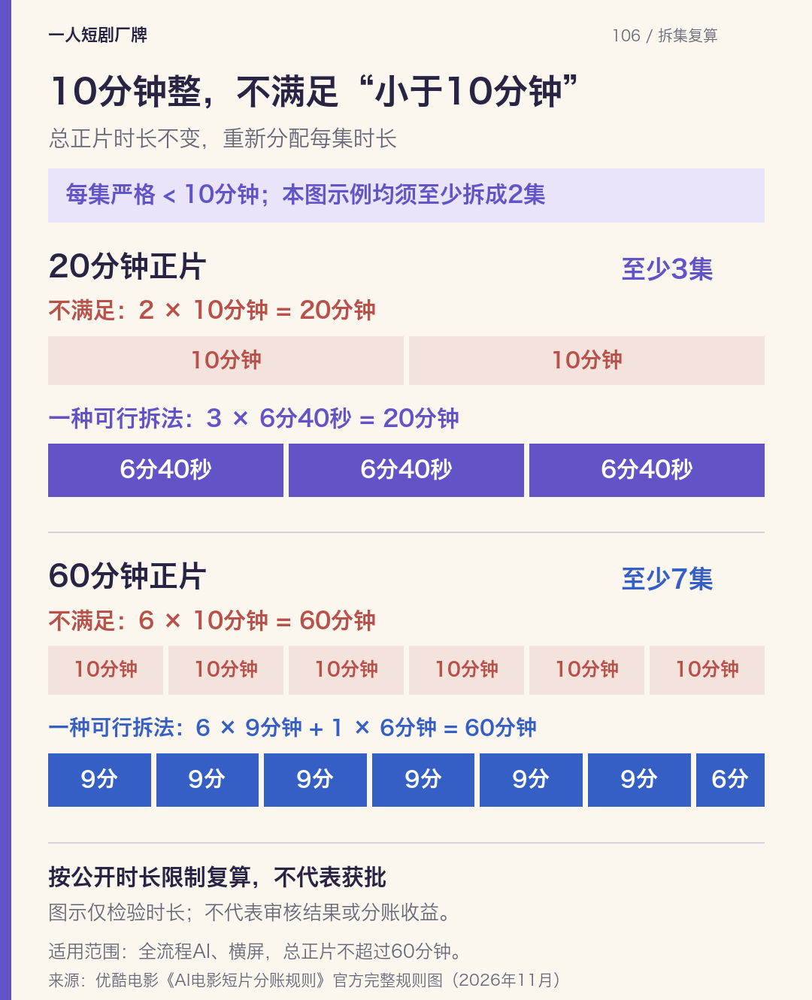

已发表 · 2026-11-15 22:36 · 阅读正式文章 · 11月规则拆解
优酷AI短片分账50%，20分钟怎么拆
2026年11月2日，优酷电影公布11月1日起生效的AI电影短片分账规则。作品须全流程AI生成、横屏，正片总时长不超过60分钟。已有横屏成片，上传前还要看清拆集要求。
50%分的是哪笔收入？
分账票房＝有效会员净收入×50%。官方图把基数限定为分账周期内，用户观看影片带来的有效会员净收入。独家、非独家的公开比例都是50%，分账周期都是1年，作品无需平台首播。
20分钟片能切成两集吗？
单集要求是小于10分钟。对“5分钟以上、60分钟以内”的作品，还要求拆2集及以上。
因此，20分钟不能切成2集各10分钟，至少要3集，例如每集6分40秒；60分钟至少7集，例如6集各9分钟、另1集6分钟。6分钟片则可按2集各3分钟核时长。这里算的是实际正片时长，切点还要适合剧情。

有成片就能直接上传吗？
按官方流程，先入驻优酷内容合作平台的自媒体品类，取得账号ID，按官方长图中的公邮申请创建节目权限。获权后，视频选“电影短片”分类并声明AI合成；创建短节目合集时，授权书类别选“电影”、付费设置选“会员可看”，添加视频后等待审核。
准备申请时，先花10分钟列出一部片的正片总时长、各集起止点与时长、素材授权情况。做完应能看出，每集是否都不足10分钟，申请权限前还有什么材料要补。
公开流程写的是收益于次月10日出账，每月10—15日申请提现。
这是11月公开规则拆解，未实测申请、获批或到账。个人资质、备案和最终授权条件需向平台确认；拆集算例不保证过审或收益。